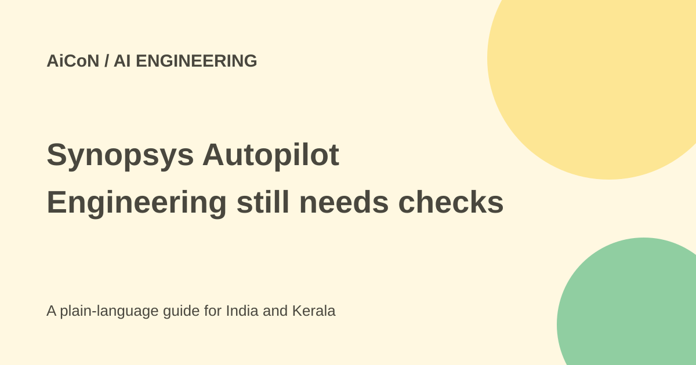

Synopsys Autopilot and AgentEngineer: chip-design AI explained
Synopsys announced AI agents for engineering workflows across chips and systems. This is an enterprise platform, not a free consumer tool that designs a finished chip on demand.

What did Synopsys launch?
The 28 September 2026 announcement introduces AgentEngineer solutions built on the Synopsys Autopilot platform. These are domain-specific, long-horizon agents. In plain language, they are designed to plan and carry out several related steps over a longer engineering task, rather than answer one question and stop.
The announced areas include verification, implementation, analog design, manufacturing, simulation and analysis. Verification checks whether a design behaves as intended. Implementation turns design requirements into a workable physical layout. These jobs require technical tools, design data and engineering review.
How the platform and agents fit together
Autopilot provides the shared foundation for coordination, reusable skills, memory, telemetry and governance. AgentEngineer solutions work in particular engineering domains. The announcement also describes task-level agents for work such as coverage closure, software bring-up, power-performance-area closure and analog layout.
Coverage closure is an effort to complete the checks needed for a design. Power-performance-area, often shortened to PPA, means balancing energy use, speed and chip size. A fast AI-generated suggestion is only useful if the design tools and validation process show that it meets the project's requirements.
Is it available or free?
Synopsys says more than 50 engagements were underway at announcement, with general availability planned for the end of 2026. A planned launch date is not proof of general availability today. Early customer engagements and a public product page are different from open self-service access.
The official pages checked here do not provide a public self-service free tier or a universal list price. Ask Synopsys about current access, licences, model use, infrastructure, supported tools and commercial terms for your organisation. Do not assume that an open architecture means open-source software or zero licence cost.
What about the large performance claims?
The announcement cites results including up to 50 times faster verification closure, 20% higher coverage, a 30% productivity boost and better token efficiency. These are vendor and launch-partner reports, not an independent test that every team can repeat.
Different figures concern different tasks and setups. Fujitsu's quote describes a 10-30% productivity boost in RTL code generation work. RTL is a way to describe digital circuits. Do not combine every maximum into a single promised gain for a whole chip programme.
How an engineering team should assess it
- Define a small workflow and its current time, cost and quality baseline.
- Confirm tool versions, supported design flows and data-access requirements.
- Use a non-sensitive or approved test project before exposing valuable design files.
- Agree which actions need engineer approval and which can run automatically.
- Validate outputs with the established design, simulation and signoff tools.
- Measure the full workflow, including review time, failed runs, model costs and infrastructure.
Security and practical limits
Synopsys describes customer choice across its own, partner and third-party models, infrastructure and tools. It also describes access controls, encryption and runtime guardrails. These are platform statements; a team still needs to review the actual deployment, contracts, data locations and permission settings.
Persistent project memory can carry useful design context. It also makes it important to know what information is retained and who can access it. Engineers should not treat a successful demonstration as final signoff or assume an autonomous workflow removes accountability for a design.
Relevance for Indian readers
This is useful news for semiconductor and systems engineers, researchers and students learning how design automation is changing. The checked announcement does not offer an India-specific free licence, course or job application. For hands-on access, use your institution's or employer's approved tools and current licence arrangements.
What changed since the original AiCoN post?
This guide adds the distinction between platform, domain agents and task agents, keeps availability as planned, and gives a practical evaluation process. It preserves the original caveat that the impressive figures are vendor-reported.
Frequently asked questions
Is this a free chip-design chatbot?
No such consumer offer is documented here.
Does it remove engineering review?
No. Outputs still need validation and signoff.
Is it generally available now?
The checked release plans general availability for the end of 2026.
Sources: Official September 28 announcement · Current AgentEngineer product page. Checked 7 October 2026.